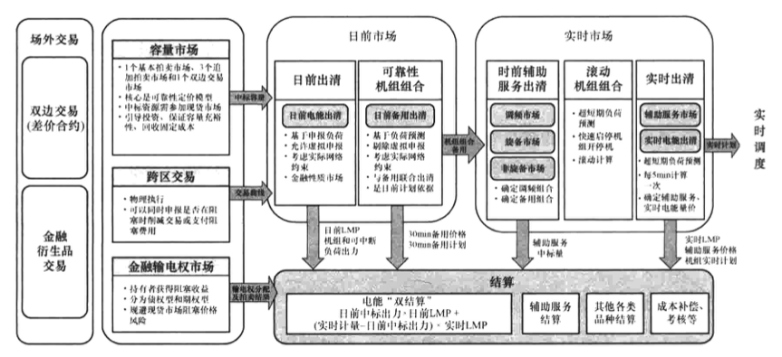
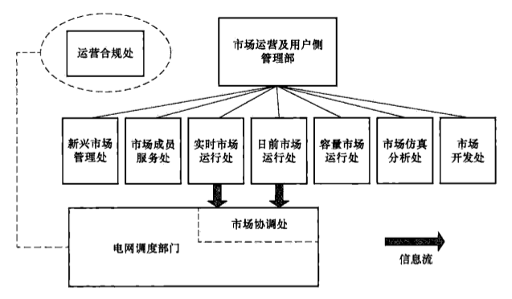
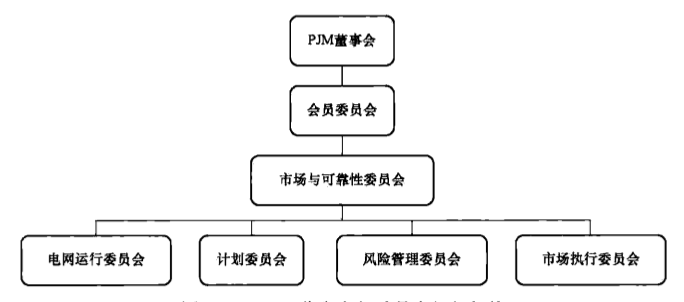

图 7–3 PJM 其他电源分类别发电量情况
PJM 电力市场覆盖区域涉及美国 14 个州，各州 2021 年用电量占比如表 7-1 所示。
表7-1
PJM 各州 2021 年用电量占比
| 州 | 华盛顿特区 | 特拉华 | 伊利诺伊 | 印第安纳 | 肯塔基 | 马里兰 | 密歇根 |
| 用电量占比 (%) | 1.2 | 1.6 | 12.1 | 2.8 | 2.9 | 8.1 | 0.6 |
| 州 | 北卡罗来纳 | 新泽西 | 俄亥俄 | 宾夕法尼亚 | 田纳西 | 弗吉尼亚 | 西弗吉尼亚 |
| 用电量占比 (%) | 0.6 | 9.9 | 19.9 | 19.4 | 0.1 | 16.1 | 4.7 |
7.2 电力市场建设历程
PJM 组织始建于 1927 年，它是世界上第一个电力联营组织，负责协调成员之间的合作。1962 年，PJM 安装了第一台用于控制发电的线上计算机。PJM 于 1968 年完成了第一个能源管理系统（EMS），这个 EMS 是一个信息技术系统，可以实时监控输电网运行。1993 年，PJM 互联协会成立时，PJM 开始向一个独立、中立的组织过渡。1996 年，PJM 推出了第一个网站，为其成员提供最新的系统信息。
1996年，美国联邦能源监管委员会（FERC）颁布888号和889号令，要求电力公司开放公用事业的输电网。应联邦政府改革的要求，1997年PJM组织改组成PJM联网有限责任公司（PJML.L.C.），开始执行开放输电网的市场化改革，建立了美国第一个区域性的、基于报价的电力市场。同年晚些时候，FERC批准PJM成为美国第一个全功能的独立系统运营商（ISO）。独立系统运营商负责电网的营运，但不拥有输电网，以便为非公共事业服务公司的用户提供对网络的无歧视接入。
1998 年，PJM 成为区域独立系统运行机构，并逐步增加电力交易种类，包括支持备用分配制度的容量交易市场、输电权交易市场、日前电能交易市场、实时电能交易市场以及为系统提供备用资源的辅助服务市场等。
1999年出台的 FERC2000号法令进一步将ISO的概念扩展到了RTO，同时明确了RTO必须具备费率管理和设计、阻塞管理、并行潮流管理、辅助服务、总输电容量和可用输电容量计算、市场监督、规划、区域间协调8个功能。2002年PJM成为全美第一个功能完备的区域输电组织（RTO）。
2002～2005年，PJM成功整合多个输电网，包括2002年的阿勒格尼电力公司（Allegheny Power）和罗克兰电力公司（Rockland Electric）；2004年的联邦爱迪生公司（Commonwealth Edison Company）、美国电力公司（American Electric Power）和代顿电力与照明公司（Dayton Power&Light）；在2005年，第一能源（FirstEnergy）的输电附属公司美国输电系统公司（American Transmission Systems）和克利夫兰公共电力公司（Cleveland Public Power）被整合到PJM。2012年，俄亥俄杜克能源公司（Duke Energy Ohio）和肯塔基杜克能源公司（Duke Energy Kentucky）加入PJM，并于2013年将东肯塔基电力合作社（East Kentucky Power Cooperative）纳入PJM。这些输电网的集成整合扩大了PJM的覆盖范围，增加了可用资源的数量和多样性，满足了消费者对电力的需求，并增加了PJM批发电力市场的收益。
2007年6月之前，采取的是负荷加权平均LMP和平均网损因子作为网损价格；2007年6月之后，实施边际网损分量定价。1998年，PJM开创了容量信用交易模式的容量信用市场（capacity credit market，CCM）。1999年1月27日，由于容量信用市场容易被操纵而被管制；1999年5月31日，容量信用市场经过改良后恢复运行；1999年7月10日再次被管制，此后一直处于管制状态。2007年，PJM采用可靠性定价模式取代原有的容量信用市场，并于当年4月开始正式运行，完成首次容量拍卖。2018年，PJM容量市场投入运行，产品为基本容量资源。2020年，PJM容量市场新增“运行容量资源”产品。
截至2022年6月，PJM仍处在不断完善市场规则和市场设计的进程之中。PJM的主要商品品种和关键市场机制改革历程如图7-4所示。
图 7-4 PJM 的主要商品品种和关键市场机制改革历程
7.3 电力工业结构现状
美国电力市场主体呈现多元化的特征，在美国的3300多家公用电力公司中，联邦所属电力公司占0.3%，市属电力公司占60.9%，私有电力公司占5.7%，农村电力合作社占26.5%，电力经销商占6.6%。从服务的电力用户数量来看，市属电力公司占15%，私有电力公司占68%，农村电力合作社占13%，电力经销商占4%。
美国输电线路拥有权也非常分散，其中约2/3为垂直一体化的公用电力公司所有，其他为众多的联邦政府机构、市政电力公司和农村电力合作社拥有，此外还有一些赢利性的电网经营企业。由于输电资产分散，难以强迫私企进行输电业务的集中整合，美国选择成立ISO/RTO的方式，将相邻区域内所有输电线路的调度管理权集中授权给ISO/RTO，以保障系统运行安全和促进更大范围的交易。
PJM 是非盈利性市场运营机构，PJM 本身不拥有任何发电或输配电资产。PJM 电力市场的配电业务依然主要由电力公司开展，执行配售分开模式，售电公司可自由组建和成立，电力用户也可自主选择或更换售电公司。加入 PJM 的电力公司需服从 PJM 的统一调度、参与 PJM 组织的电力市场，并在 PJM 的各委员会拥有投票权。PJM 的成员公司中有许多电力公司同时具有发电、输电、配电、售电业务。输电设备所有者必须按照与其自有机组同样的规则，为各方提供输电服务。FERC 要求电力公司从财务上（并非所有权，因为 FERC 没有拆分电力公司资产的法律授权），分开发电、输电、系统运行控制和配电。具体要求包括：① 电力公司在制定输电费率时必须将发电、输电、辅助服务费用分开；② 电力公司制定员工行为规范，将从事输电业务的员工与从事发电业务的员工严格分开，并在运行中遵守行为规范。
7.4 电力市场架构及特点
PJM 是“集中式电力市场”的典型代表。经过多年的运行，PJM 逐渐形成了多时间周期、多商品品种、多市场主体参与的复杂电力市场体系，在电力市场容量充裕性保障、电力市场促进电网安全经济运行、市场价值发现及传导、市场成员收益风险规避、增强市场流通性、电力市场风险管控等方面均建立了巧妙的市场机制，并且各个机制之间衔接有效。
7.4.1 市场总体架构
PJM 现货电能交易是集中式的全电量交易，主要包括日前市场、实时市场，由 PJM 集中进行组织。日前市场允许发电、负荷、需求响应资源参与，同时也考虑了跨输电公司的交易；为增加市场流动性、弥合日前市场和实时市场的价格偏差，在日前市场中，PJM 允许虚拟报价，备用、调频辅助服务也与电能量联合出清。但中长期交易不是 PJM 的业务范畴，中长期交易主要是采用双边交易的金融差价合约，或者是在纽约交易所开
展的电力金融衍生品交易。
PJM 电力市场采用节点边际电价机制，LMP 由系统电能价格、输电阻塞价格和网损价格三部分组成。其中系统电能价格在所有节点具有相同的数值；不同节点的价差决定了各节点之间的输电阻塞价格；网损由引起网损的市场主体支付，无法分清责任的情况下由所有用户平摊。为了增加市场流动性，PJM 计算若干虚拟中心点的加权平均电价，作为交易的结算点。由于阻塞价格的存在，为了给市场成员提供规避高阻塞成本的风险，同时为了建立竞争性的阻塞盈余分摊机制，PJM 设立了金融输电权市场。
为了保障长期容量充裕性、为机组建设回收固定成本，PJM 提前 3 年开展基于可靠性定价模型的容量市场，在容量市场中标的资源必须参与电能与辅助服务市场的投标。
PJM 的日前市场和实时市场采用双结算系统。日前市场出清结果用于结算，日前可靠性机组组合用于日前计划，实时市场出清结果用于结算和调度执行。PJM 的总体市场架构如图7-5所示。
7.4.2 主要交易品种
7.4.2.1 电能市场
PJM 电力现货市场包括日前市场和实时市场。
日前市场是 PJM 电能市场的重要子市场。发电厂商、负荷用户、需求响应资源、虚拟资源等可参与日前市场。实时市场仅允许发电侧市场成员、需求响应资源参与，需求侧采用实际负荷预测，并且不再允许虚拟投标。

图 7-5 PJM 总体市场架构
1. 申报形式
（1）发电侧报价。
机组申报的内容包括启动报价、空载价格、递增的电力报价曲线、辅助服务报价。机
组的技术性参数包括发电机的启动时间、发电机的最小运行时间、发电机的最小停机时间、发电机的有功功率极限、发电机的无功功率极限、发电机每天最多的启停次数、发电机的爬坡率等。发电机组可以基于成本报价，也可以基于市场报价，基于市场报价一般有最高报价限额。
发电厂商可以选择报量报价方式参与电力市场，也可以选择报量不报价、自计划方式参与电力市场，或者接受市场价格。
（2）负荷报价。
负荷侧申报分为固定需求申报、价格敏感需求申报、虚拟负荷申报、需求响应申报、价格响应需求申报几类。如果用户没有申报日前价格信息，则默认其申报量为OMW。负荷侧申报需要指定申报所在位置，即输电区域（transmission zones）、聚合节点（aggregate）或者母线节点（single bus）。
PJM 具有需求申报监控机制，如果某个市场成员的负荷申报需求超过其申报限值，则 PJM 会拒绝该成员的需求申报量，市场成员可以重新申报需求量以满足需求限制要求。每个负荷服务商（load serving entity，LSE）的需求申报限值的计算方法为：LSE 的需求申报限值 = max{区域峰值负荷参考点 × 1.3，区域峰值负荷参考点 + 10MW}，其中，区域峰值负荷参考点是指某个 LSE 的最新的负荷占比与该日区域峰值负荷预测的乘积，负荷占比是最近 7 天负荷占比的最高值。PJM 每天都更新需求申报限值。
PJM 的负荷侧申报可以分为以下几种类型：
1）固定需求申报（fixed demand bid）。
此类用户以“报量不报价”的形式申报每个小时的需求量，需要指定申报所在的位置。2）价格敏感需求申报（price sensitive demand bid）。
此类用户以“报量报价”形式申报，申报内容包括电力、价格（超过该价格的需求将被削减、）以及申报所在的位置。价格敏感需求申报可以为日前市场定价。
3）虚拟负荷申报。
除发电资源报价和价格敏感需求投标外，可以提交不超过2000美元/MWh的虚拟申报。
4）价格响应需求（price responsive demand，PRD）。
动态和分时零售费率的开发和实施，以及对高级计量基础设施（advanced metering infrastructure，AMI）的投资，导致PJM具备响应批发价格能力的负荷不断增加。通过启用技术和行为改变，消费者可以随着价格的变化而改变他们的需求，而无需由PJM集中调度或申报削减需求到PJM市场。鉴于动态零售价格结构和批发价格之间的联系，这种价格反应是可预测的，需要在批发市场设计和运营中加以考虑。这种因批发价格变化而可预测的需求减少被称为价格响应需求。PRD的持续发展需要批发市场和零售价格设计之间的协调，以最大限度地为消费者带来利益。为小型商业和住宅客户部署AMI可以实现与批发价格相关的、动态的、具有时间差异的零售费率结构。
PRD 不参与日前市场，而是参与实时市场。尽管 PJM 不能直接调度 PRD，但零售客户对实时能源价格信号的自动响应可以通过测算负荷的价格弹性进行预测分析。在容量紧急情况下，价格通常会上涨，从而导致需求下降。因此，PRD 将能够减少满足基于电
力不足小时期望（LOLE）的可靠性标准所需的装机容量。PRD一般由PJM成员提供，该成员代表有能力根据价格减少零售客户的负载。代表此类零售客户提供PRD的PJM成员被称为PRD提供商。特定零售客户的PRD提供商必须满足提供PRD的资格要求。被标记为PRD的终端用户不能被注册为经济型需求响应或者紧急需求响应，不能在容量市场中作为任何需求响应资源或者电能效率资源的基础，不能作为其他PRD提供者的计划或依据。
5）需求响应（demand response，DR）。
需求响应与 PJM 市场的整合对提升电网可靠性有重要影响。需求资源能够在削减服务提供商（curtailment service providers，CSP）的指导和控制下参与各种 PJM 市场。CSP 是 PJM 的特殊成员，通过减少需求资源的负荷来参与 PJM 市场。
紧急型需求响应资源通过在紧急情况中或紧急情况前减少负荷来完成需求响应，通过仅获得削减负荷的电能费用、仅获得减少容量的容量费用、同时获得电能和容量费用三种形式获得费用。经济型需求响应资源能够响应PJM电能、旋转备用和/或日前计划备用价格，方法是减少负荷获得削减费用或遵循PJM信号以减少或增加负荷（如果提供调频服务），可以通过两种方式获得费用：① 在日前市场通过减少负荷并按照日前LMP获得费用；② 在实时市场承诺削减负荷并按照实时市场LMP获得费用。需求响应结算的电能应仅限于为响应实时和/或日前LMP或因PJM调度而执行的削负荷电量，而不是正常运营中的负荷降低电量。
2. 出清原理
PJM 采用基于安全约束机组组合（SCUC）以及安全约束经济调度（SCED）程序在日前联合优化电能和备用，确定次日每小时的日前 LMP 和计划备用出清价格。日前市场是一个金融市场，基于电能和需求侧的投标、虚拟投标和双边交易的结果，以成本最低为优化目标计算次日的资源组合以及出清价格。实时电能市场基于资源的申报、系统边界的预测情况等，每 5min 以成本最低为优化目标，计算实时资源出力及出清价格。
日前电能市场出清可以理解为按照基于机组申报价格的发电成本，从低到高排序来决定机组启停和出力，直至总出力满足系统负荷需求。在如上基本排序原则的基础上，还需要考虑机组运行约束、断面限值约束、系统正负备用约束等，机组运行约束包括机组最大/最小出力约束、机组发电能力约束、机组最小运行时间约束、机组最小停机时间约束、机组检修停机约束、气量约束、燃机汽配比约束。实时电能市场出清基于日前调度计划、日内滚动修正的机组启停结果，进行实时机组出力安排，目标函数中的发电成本不再含启动成本，考虑约束不再包括机组最小开停机时间等与机组启停相关的约束，其他约束与日前市场出清约束原理基本一致。PJM 的日前市场与实时市场均采用节点边际电价机制。
由于日前市场的金融属性较强，在日前市场出清之后，用户侧中标电量可能小于或者大于负荷预测值，其出清结果不能直接用于日前发电计划安排，PJM基于更新的报价、更新的资源可用信息、实际短期负荷预测等，运行可靠性评估及机组组合（reliability assessment and commitment，RAC），对日前出清结果进行调整以保证日前发电计划下的电网可靠运行要求，结合增量可靠性机组组合结果确定机组的日前开停机计划。一直到
运行时刻前一段时间，PJM 根据最新的负荷预测等市场边界条件，增量调整机组的开停机，以满足可靠性要求。
7.4.2.2 辅助服务市场
PJM 辅助服务主要包含备用、调频、无功和电压控制服务、黑启动，各类辅助服务相关总结如表7-2所示。PJM 将调频、备用辅助服务义务按照负荷比例分配给负荷服务商（load serving entity，LSE）作为其调频、备用义务。LSE 可以利用自己的发电资源或与第三方签订合同来履行自己的调频、备用义务。若仍然无法完全履行其责任，可以从 PJM 辅助服务市场上购买调频、备用服务。
表7-2
美国PJM辅助服务概览
| 辅助服务 | 组织形式 | |
| 调频服务 | 调频市场 | |
| 备用 | 旋转备用（包括一类资源和二类资源，与系统保持同步，在 10min 内提供） | 实时旋转备用市场 |
| 非旋转备用（在 10min 内提供的非紧急发电资源） | 实时非旋转备用市场 | |
| 日前计划备用 | 日前计划备用市场 | |
| 无功 | 成本补偿 | |
| 黑启动 | 成本补偿 | |
1. 备用辅助服务
PJM 备用辅助服务包括旋转备用、非旋转备用、日前计划备用三种备用产品。其中旋转备用、非旋转备用均在实时市场阶段与电能、调频联合出清，并且均属于 10min 之内能够提供的备用产品。日前计划备用在日前市场阶段与电能联合出清，属于 30min 之内能够提供的备用产品。
参加旋转备用市场的所有机组被分为一类机组（T1）和二类机组（T2）两类。一类机组（T1）指带部分负荷的在线机组，服从经济调度，能够增加出力以提供旋转备用。二类机组（T2）指冷凝式机组（燃气轮机和水轮机），可以在偏离经济运行点以最小运行方式运行，以提供旋转备用。非旋转备用是指同电网异步的资源。T2资源的旋转备用报价和旋转备用爬坡比例必须在运营日前一天锁定，如果没有报价，则认为缺省报价为0；为精确反映运营日中每种资源的备用能力和可用性，如下信息将在旋转备用市场关闭前进行提交：T2资源的旋转备用可用性、旋转备用上报总额，以及旋转备用最大值。能够在收到通知的10min之内启动并且提供电能的非紧急发电资源，也被认为是可用的非旋转备用，非旋转备用不需要提交报价信息。
日前计划备用用来解决在实际运营日当天任何意料之外的系统状况。PJM市场中日前计划备用没有必须的报价要求，已在日前电能市场中提供电能报价，同时有容量可用于30min内调度的资源，除非特别标明不参加日前计划备用市场，否则默认参加；需求侧资源在该市场中也是可用的。
2. 调频辅助服务
调频服务主要目的是维持系统的频率稳定。提供调频服务的发电机组必须能够在
5min 内增加或减少其出力，以响应自动控制信号。调频市场的标的细分为上调频和下调频两种单向的调频服务，两种调频服务分别出清，其市场价格各不相同。PJM 调频市场组织方式主要包括日前报价、时前出清和实时出清三个环节。
在运行日前一天，PJM 预测并公布系统调频需求。参与调频服务市场的资源进行报价，报价具体包括容量报价、里程报价和愿意提供的调频容量3个部分。为体现调频性能和调频资源类型的区别，PJM结合历史综合调频性能指标、调频性能指标等对容量报价和里程报价进行调整，将调整后的价格作为出清依据。
实时运行前 1h，PJM 通过辅助服务优化程序（ancillary services optimizer，ASO）计算电能、备用和调频的联合优化，计算得到 1h 的调频资源组合以及备用。PJM 根据预测的实时市场 LMP 和调频资源的运行成本曲线，计算出每个机组的机会成本。每台机组的机会成本加上调整后的调频容量报价、调频里程报价将得到它的排序价格。自调度机组也可提供调频，这类机组最优顺序价格设为 0，提供调频的自调度机组也能够按照调频出清价格得到补偿。将所有提供调频服务的机组按照排序价格由低到高进行排序，可以得到最优的提供调频服务的机组组合，时前出清的辅助服务价格不作为最终出清价格。
进入实时调度以后，每 5min 进行一次电能量出清，出清中预留时前调频中标容量，并确定该调度时段的 LMP。PJM 根据每 5min 的 LMP 重新计算已中标调频资源的机会成本，在容量报价和里程报价不变的基础上，将机会成本改为实时出清的机会成本，里程调用率由历史值改为实际值，从而得到新的排序价格。在每个调度时段内，最高排序价格为调频市场出清价格，调频中标资源中的最高里程报价即为里程价格，调频市场出清价格减去里程价格得到调频容量价格。
3. 无功和电压控制服务
为了将输电电压保持在可接受的时间内，PJM 调用发电和其他资源以产生或吸收无功功率。来自发电和其他来源的无功电源和电压控制服务由输电供应商提供。无功和电压控制服务的收费基于成本核算，使用 PJM 输电服务的用户必须从传输提供商处购买此服务，包括 PJM 区域内部的用户以及使用 PJM 输电线路的跨区交易。
4. 黑启动
PJM 的黑启动服务是发电机组在没有外部电源的情况下启动的能力，或者具有高运行系数的发电机组在与电网断开连接时自动保持在较低水平运行的能力。黑启动主要用于系统全部停电之后，通过具有自启动能力的发电机组（黑启动机组）启动，带动无自启动能力的发电机组，逐渐扩大系统恢复范围，最终实现整个系统的恢复。PJM 的黑启动服务费用基于成本核算，没有采用市场化定价方式。所有使用 PJM 输电服务的市场成员必须支付黑启动费用，包括 PJM 区域内部的用户以及使用 PJM 输电线路的跨区交易。
7.4.2.3 容量市场
据 PJM 可靠性保障协议，负荷服务商必须持有足够机组容量，以满足自己的容量义务，不能履行义务的负荷服务商将按照协议条款进行处罚。容量义务构成了容量市场的需求基础。
PJM 容量市场以机组可用装机容量作为标的，卖方为容量资源提供商，买方为系统
运营商。卖方申报容量资源报价和数量，按价格从低到高形成供给曲线。系统运营商根据可靠性指标参考机组建设成本及电能量市场收益，按照一定规则形成需求曲线。最后，由供给曲线和需求曲线在一系列约束条件下最小化容量购买成本得到容量市场出清结果，包括容量市场出清价格以及各容量资源提供商中标的容量。在PJM容量市场中，允许各种类型资源参与容量市场，包括可调度机组、波动性可再生能源发电、需求侧资源（诸如需求响应或能效措施）以及输电资源。容量购买费用由所有市场用户分摊。
由于2014年冬季PJM地区极端天气的影响，PJM增加了对年度容量性能产品的需求，而对于风、光来说不确定性较高的波动性能源其无法保障自己在一年中任何时候均可用。在这种背景下，PJM容量市场的新能源一般选择不单独参与容量市场，通常将间歇性资源、储能资源等资源聚集起来作为聚集资源参与容量市场。
美国PJM容量市场交易组织包括1个基本拍卖市场、3个追加拍卖市场和1个双边交易市场。基本拍卖提前3年举行，主要目标是通过购买不能以双边交易或自行发电供给形式满足的容量需求，使系统实现容量供给平衡。基本拍卖市场的出清价格向市场成员提供了一个稳定的远期价格信号，引导发电厂商投资，保证系统发电容量的长期充裕，减轻了电力现货市场价格剧烈波动的风险。3个追加市场分别在容量交付前的20个月、10个月、3个月进行，以修正预测误差。当出现输电线工程未如期进行等意外情况并导致部分区域出现容量短缺问题时，美国PJM还将额外举行一次追加拍卖以满足系统容量需求。除了集中拍卖外，负荷服务商可以与容量资源提供商进行双边协商交易，自行协商交易的容量数量与价格。
需求曲线的设计是容量市场机制的核心内容，决定了容量市场出清价格是否合理、出清容量能否满足系统可靠性需求。早期容量市场的需求曲线完全无弹性，仅规定了价格上限和目标容量，供给曲线的微小变动也能造成出清价格的巨大变化。完全无弹性的需求曲线也会导致资源提供商滥用市场力，获取超额利润。因此，PJM采用的需求曲线有一定的价格弹性，出清容量可以在目标容量附近变动。PJM容量市场的需求曲线如图7-6所示，其中b点表示电网运营商期望的未来区域发电容量总量及容量价格；a点向左表示当容量资源极度稀缺时，对应的容量价格为限定的最高值。b点向左表示当容量资源较稀缺时，对应容量价格上升，b点向右表示容量资源较为充裕，容量单价价格下降，减少了发电厂商收益并给出了市场投资信号。c点向右表示资源严重过剩，容量单价价格为零。
图 7–6 PJM 容量市场需求曲线示意图
当总装机容量低时，容量价格为制定的容量价格最大值。发电容量富裕时，发电厂商容量市场中的预期收益会降低。一方面，电网运营商通过对期望系统发电容量的设置，引导发电厂商对电源的投资；另一方面，容量市场价格与辅助服务市场和电能量市场存在一定耦合联系。当在其他两个市场收益提升时，容量市场的收益会降低，该机制可在保证发电厂商收益率的同时降低用户的用能涨价风险。
自 PJM 采用可靠性定价模型进行容量市场出清以来，PJM 容量市场建设取得了较好的效果。可靠性定价模型中考虑了输电阻塞，导致不同地区的容量价格不同，这有效地反映了不同地区装机容量的需求程度，在容量短缺的 PJM 东部地区，采用可靠性定价模型后容量价格明显上升，有效激励了电源建设，缓解电网装机容量不足的问题。PJM 容量市场保证了电力系统的长期发电充裕性，确保了电力市场和电力系统的稳定运行，使电力现货市场出清电价更平稳。
7.4.2.4 金融输电权市场
金融输电权（FTR）是一种金融工具，为市场成员提供了有效的对冲机制以应对 LMP 中阻塞价格的不确定性，增强远期价格发现、透明度和市场流动性，同时也为阻塞盈余的分配提供了竞争机制。FTR 不代表实际传输电力的权利，FTR 的持有者不要求通过实际传输电力来获得阻塞收入。
FTR 定义了注入点和输出点，如果 FTR 中指定的注入点和输出点之间的传输存在阻塞并且在日前市场产生阻塞价格差异，FTR 的持有者将获得从市场参与者那里收取的一部分阻塞盈余。FTR 的收益主体与造成阻塞的主体没有关系，只要 FTR 指定的方向上发生了日前阻塞，FTR 持有者便可以获得相应费用。
PJM 的 FTR 可划分为债权型 FTR 和期权型 FTR，其中债权型 FTR 只有在输电权指定方向与阻塞方向一致时，输电权所有者才能从中获取结余分摊。当两者方向相反时，债权型 FTR 所有者需要支付由于节点间 LMP 价差而产生的额外费用。相比之下，期权型 FTR 不要求其所有者为反向阻塞支付费用，是一种安全性更高的风险规避手段。
金融输电权可以通过中长期 FTR 拍卖、年度 FTR 拍卖、月度 FTR 拍卖以及 FTR 二级市场四种市场机制得到。在进行长期 FTR 拍卖的计划期之后，PJM 通过多轮 FTR 流程进行中长期 FTR 买卖流程；年度 FTR 拍卖包含多个轮次，拍卖每年 PJM 系统上全部可用的输电权力，年度 FTR 拍卖的清算机制将使基于报价的 FTR 收益值最大化；FTR 月度拍卖对象为在年度及中长期 FTR 拍卖后剩余的任何可用输电权利，且允许市场参与者有机会出售他们所持有的 FTR；FTR 二级市场是促进 PJM 成员之间进行 FTR 交易的机制。
FTR 拍卖出清机制是以基于投标的拍卖收益最大化为目标，考虑申报容量约束、输电线路约束和 N-1 情况下的输电线路约束，出清过程是 FTR 最优化程序与同步可行性测试程序（simultaneous feasibility test，SFT）的迭代过程。FTR 被建模为注入点的发电和输出点的负荷。SFT 测试基于直流法 N-1 潮流计算更新 FTR 优化程序中需要考虑的线路传输约束，以确保所有中标的输电权利都在现有传输系统的能力范围内，并且确保 PJM
电能市场在正常系统条件下的收入充足。
PJM 输电权市场引入了拍卖收益权（auction revenue rights，ARR），拍卖收益权是分配年度 FTR 拍卖收益的机制。拍卖收益权将分配给网络传输服务客户（network transmission service customers）和固定点对点传输客户（firm point-to-point transmission customers），市场参与者可以提交 ARR 申请，PJM 将根据同步可行性测试程序的结果批准全部、部分或不批准相应请求。ARR 定义了注入点和输出点，每个 ARR 的经济价值基于年度 FTR 拍卖产生的 FTR 电力数量以及输出点和注入点的 LMP 差异。ARR 的经济价值可以是正的或负的。ARR 持有者每轮应获得的 ARR 收入等于 ARR 的 MW 数量（除以轮数）乘以 ARR 注入点与输入点的价格差，具体公式为：（ARR MW/ARR 拍卖轮次）×（LMP_{ARR Sink} - LMP_{ARR Source}），其中，ARR 拍卖轮次是指年度 FTR 的拍卖轮次，LMP_{ARR Sink} 和 LMP_{ARR Source} 分别是指每轮年度 FTR 拍卖中输出点和注入点的节点边际价格，ARR 电力是指这笔 ARR 的数量。ARR 持有人可以保留分配的 ARR，并从年度 FTR 拍卖中获得相关的收入分配。ARR 持有者还可以在年度 FTR 拍卖的第一轮中通过将 ARR 以“自计划”的形式转到 FTR 中，以利用分配的 ARR 收入购买 FTR。当“自计划”时，FTR 必须与关联的 ARR 具有相同的路径。此外，ARR 持有人可以在年度 FTR 拍卖中竞标，以获得替代路径或替代产品的 FTR。
7.4.3 市场机制特点
7.4.3.1 电能与辅助服务联合出清机制
PJM 采用电能与辅助服务联合出清的模式，包括日前电能和计划备用联合优化，以及实时市场的电能、调频、备用联合优化两部分。电能与辅助服务联合出清是指在市场出清计算时，根据电能量与辅助服务的报价，考虑电能量与辅助服务之间的约束耦合关系，以电能量与辅助服务总成本最小为优化目标，通过一次出清计算生成电能量与辅助服务的中标出力及价格。电能与辅助服务的联合出清模式之外，电能与辅助服务也可以独立顺序出清。
PJM 运行备用的报价在日前提交，提供运行备用的同一资源可以同时参与调频市场报价。所有参与日前电能量投标并满足计划备用条件的机组均认为可以提供计划备用（可用但未提交备用投标的机组默认零报价）；日前市场出清形成次日小时机组组合、日前 LMP 和计划备用计划及价格。日内小时前组织调频市场和同步备用市场，分小时前辅助服务优化（ASO）、滚动 SCED（IT SCED）、实时 SCED（RT SCED）3 个步骤与实时电能进行联合优化。ASO 在运行前 60min 执行，联合优化电能、备用和调频，同时进行调频市场力检测；IT SCED 联合优化电能和备用，执行电能的市场力检测，并判断备用资源是否短缺，该阶段可进一步调用燃气机组和需求响应等响应速率较快的资源。RT SCED 通常提前 10min 执行，联合电能、调频和备用，得到每 5min 的电能、调频、备用计划和价格。
PJM 的电能与辅助服务联合优化出清机制充分体现了电能与备用、调频在物理方面
的容量耦合关系，以及在经济方面的机会成本关系，是对电能与辅助服务物理、经济客观规律充分表征、充分尊重的出清机制。联合出清模式同步考虑电能量、辅助服务的经济性目标、物理性约束，相比独立出清，联合出清对电能、调频、备用资源的安排整体遵循系统整体社会福利最大的原则，能够最大程度上实现更为经济的电能量与辅助服务安排，最大化市场资源配置效率。但是联合优化的出清模式需要考虑的因素与约束条件较多，对运行部门的出清组织、安全校核工作、结果合理性分析，以及市场成员成熟度等提出了更高要求。
7.4.3.2 虚拟申报机制
PJM 允许具有实际物理发用电设备实体的市场成员以及没有任何物理发用电设备实体的市场成员进行虚拟申报。虚拟申报需指定节点，市场成员可以在任意有效的发电、负荷结算节点或者中长期交易的交割点等进行虚拟申报，按照该节点的出清价格进行双结算，并且不要求该市场成员必须实际存在于该指定节点。虚拟申报仅能在日前市场进行，由于虚拟申报市场成员并不具备实际交割能力，实时市场结算相当于进行日前市场的反向操作，将日前市场卖出的电力等量按实时价格买入，或者将日前市场买入的电力等量按实时价格卖出。
PJM 的虚拟申报包括递增报价（increment offer）和递减报价（decrement bid）。递增报价即虚拟变电交易，该虚拟申报类似于在指定节点具有一台虚拟发电设备，但是无需具备真实发电能力，基于日前出清价格向日前市场卖出电力，基于实时出清价格从实时市场购买等量的电力，当日前价格高于实时价格的时候获得利润。递减报价即虚拟买电交易，该虚拟申报类似于在指定节点具有一台虚拟用电设备，但是无需具备真实负荷，基于日前出清价格向日前市场买入电力，基于实时出清价格从实时市场卖出等量的电力，当日前价格低于实时价格的时候获得利润。
通过虚拟申报机制，没有物理设备实体的主体也可以加入市场，通过低实高卖等操作获利，进一步增加了PJM电力市场的流动性，缩小了因负荷、新能源预测偏差导致的日前和实时市场价格差异，促进了日前和实时市场的价格趋同，促进日前市场价格风险规避作用的发挥。同时，虚拟申报还可以对具有物理设备实体的发电申报形成一定的保护作用。比如，某自计划机组（自计划出力为200MW）预判实时价格将高于日前价格，想将所有发电出力都用实时价格结算，该机组在其所在节点额外申报了一个虚拟实电交易报价，申报电力为200MW，申报价格为100美元/MWh，假设其所在节点的日前LMP为30美元/MWh，实时LMP为35美元/MWh，那么该机组在日前市场的结算为：常规投标的结算费用为 $ 200 \times 30 = 6000 $美元；虚拟投标的结算费用为 $ -200 \times 30 = -6000 $美元，日前市场的净结算收入为0美元。该机组在实时市场的结算为：常规投标的结算费用为 $ (200 - 200) \times 35 = 0 $美元；虚拟投标的结算费用为 $ [0 - (-200)] \times 35 = 7000 $美元，实时市场的净结算收入为7000美元。该机组通过虚拟申报实现了全部电量按照实时市场价格结算。再比如，假设某台机组预判实时价格将高于日前价格，并且可能会在实时市场发生机械
故障导致发电能力降低，该机组日前出力 200MW，该机组在其所在节点额外申报了一个虚拟变电交易报价，申报电力为 100MW，申报价格为 20 美元/MWh，假设其所在节点的日前 LMP 为 15 美元/MWh，实时 LMP 为 20 美元/MWh，实时实际出力为 100MW。该机组在日前市场的结算为：常规投标的结算费用为 $ 200 \times 15 = 3000 $ 美元；虚拟投标的结算费用为 $ -100 \times 15 = -1500 $ 美元，日前市场的净结算收入为 1500 美元。该机组在实时市场的结算为：常规投标的结算费用为 $ (100 - 200) \times 20 = -2000 $ 美元；虚拟投标的结算费用为 $ [0 - (-100)] \times 20 = 2000 $ 美元，实时市场的净结算收入为 0 美元，该机组总体收入为 1500 美元，如果不进行虚拟申报，该机组的收入为 $ 200 \times 15 + (100 - 200) \times 20 = 1000 $ 美元，该机组通过虚拟申报规避了一部分收益风险。
虚拟申报机制引入了非物理实体的市场成员的加入，对市场监管、市场运营成熟度等都具有较高要求，并且容易对日前调度计划的制定产生影响，进而影响电网安全运行，在市场发展初期需要谨慎考虑是否采用。
根据 PJM 第三方监管机构监管分析公司（Monitoring Analytics）2021 年年度报告有关统计数据，2021 年 PJM 虚拟交易申报量中，物理实体占比 9.1%，金融实体占比 90.9%；PJM 虚拟交易出清量中，物理实体占比 16.7%，金融实体占比 83.3%。
7.4.3.3 双结算机制
PJM 的双结算机制是指既对日前电能市场结算、也对实时电能市场结算。与 PJM 双结算机制不同的一个实例是澳大利亚电力市场，虽然澳大利亚也是全量集中型市场模式，但是其日前环节不结算，仅实时市场出清的量、价用于结算。
PJM 的日前市场、实时市场均是全量市场，某市场成员在日前市场的出清电量基于日前出清价格结算；其实际量测电力与日前市场出清电力的偏差基于实时出清价格结算。对于负荷侧而言，如果其实际用电电力超过日前出清电力，则偏差量按照实时 LMP 支付费用；如果实际用电电力低于日前出清电力，则偏差量按照实时 LMP 获得费用。对于发电侧而言，如果其实际发电电力超过日前出清电力，则偏差量按照实时 LMP 获得费用；如果实际发电电力低于日前出清电力，则偏差量按照实时 LMP 支付费用。举例说明双结算的具体细节，如表 7-3 及表 7-4 所示。
表7-3
双结算示例（负荷侧）
| 负荷侧成员 1 | 示例 1 | 示例 2 |
| 日前出清电力 | 100MW | 100MW |
| 日前 LMP | 20 美元/MWh | 20 美元/MWh |
| 实际用电电力 | 105MW | 95MW |
| 实时 LMP | 23 美元/MWh | 15 美元/MWh |
| 结算 | 日前： $ 100 \times 20 = 2000 $ 美元\n实时： $ (105 - 100) \times 23 = 115 $ 美元\n总支付费用：2000 + 115 = 2115 美元 | 日前： $ 100 \times 20 = 2000 $ 美元\n实时： $ (95 - 100) \times 15 = -75 $ 美元\n总支付费用：2000 - 75 = 1925 美元 |
表7-4
双结算示例（发电侧）
| 发电侧成员 A | 示例 3 | 示例 4 |
| 日前出清电力 | 200MW | 200MW |
| 日前 LMP | 20 美元/MWh | 20 美元/MWh |
| 实际发电电力 | 205MW | 100MW |
| 实时 LMP | 10 美元/MWh | 22 美元/MWh |
| 结算 | 日前：200 $ \times $ 20=4000 美元\n实时：（205-200） $ \times $ 10=50 美元\n总收取费用：4000+50=4050 美元 | 日前：200 $ \times $ 20=4000 美元\n实时：（100-200） $ \times $ 22= -2200 美元\n总收取费用：4000-2200=1800 美元 |
PJM 通过双结算机制为市场成员提供了一个参与金融性质市场（日前市场）的选择，激励机组自愿选择参与 PJM 集中调度，增强了 PJM 电力市场的竞争性，并且为市场成员提供了额外的避免价格完全暴露在实时市场的风险规避手段。在双结算模式下，PJM 的日前市场出清结果是金融性质的出力安排和市场价格，但同时又是符合系统运行的物理可行性的。日前市场基于市场成员的申报进行出清，并且运允许虚拟报价形式，同时，日前市场考虑了完整的系统网络约束、机组运行约束、备用需求模型等。在双结算机制下，市场成员可以通过日前市场在实时调度之前确定一部分电能价格、阻塞费用；市场成员可以在日前市场申报价格敏感型的需求侧投标；市场成员还可以进行虚拟投标。负荷服务实体可以自主选择是否参与日前市场；在容量市场中标的发电资源必须参与日前市场申报，没有中标的发电资源可自主选择是否参与日前市场。
7.4.3.4 新能源参与市场相关机制
1. 新能源参与电力现货市场机制
PJM 新能源机组和其他类型机组一样，公平、无歧视、无特殊待遇地参与市场，从机组参数申报到价格申报，和其他类型机组一视同仁，但自身物理条件受到不可控自然因素影响，某些参数会受到一定约束。
参与 PJM 竞价的新能源机组主要分为接受调度指令的报价机组和自计划机组，其中自计划机组分为完全自计划机组和部分接受调度的自计划机组，自计划机组的自计划容量或自计划时段以固定出力形式参与市场。相比接受调度指令的报价机组参与形式，自计划形式占比稍高。日前报量是新能源主体对第二天出力的预估值或最大经济出力，这个上限可以在日前出清后到实时1h前根据更新预测调整。风、光报价曲线和其他类型机组基本一致，由于接近0的变动成本，这些曲线都有极低的报价甚至为负。由于出力的不可控，风、光基本上不参与辅助服务。但近年来储能的发展为未来混合互补型的风、光电站参与辅助服务提供了可行条件。
风、光的出清机制和其他机组一样，PJM 对所有机组公平开放市场意味着机组之间的竞争是全方位的，从燃料到运行成本，从效率到策略都要求市场主体有所准备。新能源的优缺点都非常明显，在市场环境下，很低的变动成本使其在报价竞争中占有很大优势，但由于出力的不确定性和不可控性，导致偏差带来的损失及有限有条件参与市场。这些
对新能源主体提出更高的预测控制要求，同时要求市场不断演变更好利用这类机组。
2. 规避新能源波动风险的相关机制
在系统运行方面，PJM 基于辅助服务市场、成本补偿、偏差考核等方式激励多种灵活调节资源积极响应系统指令调整出力，适应新能源出力波动带来的系统不平衡。在新能源机组规避收益风险方面，由于新能源出力的不确定性较大，并且电力现货市场价格具有实时波动性，新能源发电企业通过与用户签订差价合约等金融手段来规避收益风险。PJM 的容量市场设计也有助于新能源企业收回投资建设成本。美国的新能源配额制要求供电商必须购买一定比例的新能源，也促进了购电商与新能源企业签订中长期购电合同。此外，新能源发电企业还可通过出售新能源配额来获取更多的收益。
7.5 电力市场交易流程
日前、实时电能与辅助服务的交易流程如表7-5所示，具体内容如下：
D-1日11:00之前——日前市场申报。机组报价构成：①启动报价；②空载报价；③递增的电力报价曲线。负荷报价可分为固定电力申报（报量不报价）、价格敏感性报价（报量报价）两类，市场参与者可以提供包括增量报价和减量报价的虚拟报价。前者报价构成为：①想购买的电力；②在特定的地区愿意付出的最高价格。后者报价多了消减负荷的价格。传输用户使用者可提交固定的或可调整的（超过一定阻塞价格就不执行的）双边合同计划，并明确一旦实时市场产生阻塞是愿意支付阻塞费用，还是希望消减计划执行。虚拟市场成员可以申报递增曲线或者递减曲线以及电价节点，申报递增曲线的虚拟市场成员被视为所选节点处的发电机组，申报递减曲线的虚拟市场成员被视为所选节点处的负荷。
D-1日11:00——日前市场报价结束。PJM开始运行日前市场出清软件来计算日前市场每小时的机组组合和LMP。这是第一轮机组组合计算，计算过程中考虑到满足固定负荷需求、价格敏感型负荷报价、负荷减出力报价以及PJM日前备用需求约束，按照电能和备用的总体发电成本最小化为目标函数进行优化。这个优化过程也会考虑到提交给日前市场的双边交易计划和外部电源报价。
D-1日13:30——公布第一轮计算结果。PJM根据第一轮机组组合计算的结果公布日前每小时调度计划和LMP。
公布结果后到 14:15——开放实时市场报价。第一轮机组组合中未中标的市场主体可以再次提交报价。但对于在日前市场中对机组进行自计划的市场主体，在二次报价阶段不能更改机组的状态。
D-1日14:15——实时市场报价结束。PJM结合更新后的市场报价、机组可用性信息、负荷预测信息等，进行第二次机组组合。此次机组组合主要关注可靠性，目标函数是使得启动成本和新增负荷成本最小化。
D-1 日 14:15 到运行日 D——PJM 基于更新的负荷预测和机组可用性信息，根据需要进行额外的机组组合计算。PJM 会根据需要给特定机组单独发送更新的调度计划。
D-1 日 18:30 至 D 日运行小时前 65min——在此期间，市场主体可以提交更新后的
实时电能报价。
D 日运行时刻前 1h——组织调频市场和旋转备用市场，ASO 和 IT SCED 均在运行前 1～2h 实施，ASO 联合优化电能、备用和调频，同时进行调频市场力检测；IT SCED 联合优化电能和备用，执行电能的市场力检测，并判断备用资源是否短缺，该阶段可进一步调用燃气机组和需求响应等响应速率较快的资源。
D 日运行时刻前 30min——发布调频、旋转备用、非旋转备用需求量估计。
D 日运行前 15min——RT SCED 通常提前 15min 执行，联合优化在线的机组的电能和备用以满足系统的实际需求。
表7-5
日前、实时电能与辅助服务组织流程
| 时间 | 组织流程 |
| D-1 日 11:00 | 日前电能市场报价关闭，随后开展日前电能市场出清 |
| D-1 日 13:30 前 | PJM 公布日前市场第一轮计划与日前 LMP |
| 日前市场出清结果发布后至 D-1 日 14:15 前 | 实时电能市场开放报价 |
| D-1 日 14:15 | 实时电能市场报价关闭，辅助服务市场日报价关闭；随后 PJM 更新可靠性机组组合 |
| D-1 日 14:15 至运行小时前 65min 之间 | 滚动机组组合。市场主体仍可更新容量相关信息与机组状态，但不可以更改日前市场报价 |
| D-1 日 18:30 至运行小时前 65min | 市场主体可以提交更新后的实时电能报价 |
| D 日运行小时前 60min | 运行日内小时前组织调频市场和旋转备用市场 |
| D 日运行小时前 30min | 发布调频、旋转备用、非旋转备用需求量 |
| D 日运行前 15min | 运行实时市场出清 |
注 D 表示运行日，D-1 表示运行日的前一天。
7.6 电力市场组织及职责分工
PJM 米用调度、交易一体化的运营模式，PJM 在组织及职责设置方面，兼具电力交易机构与电网调度机构的职能。
7.6.1 市场组织机构概况
调度运行部是PJM最为重要的职能部门之一，其组织架构如图7-7所示，下设运行分析处、调度运行处、备调运行处、技术支持处、软件开发处、人员培训处、市场协调处7个处室。
图 7-7 PJM 调度运行部门组织架构
市场运营部主要负责PJM电力市场运营相关业务，其组织架构如图7-8所示。下设实时市场运行处、日前市场运行处、容量市场运营处、市场仿真分析处、市场开发处、新兴市场管理处、市场成员服务处7个处室。PJM市场结算业务由其结算子公司负责。

图 7-8 PJM 市场运营部门组织架构
在上述职能部门的基础上，PJM通过董事会与委员会进行管理工作，其组织架构如图7-9所示。PJM各委员会由PJM会员和持股人组成，PJM董事会负责监管PJM会员

图 7-9 PJM 董事会与委员会组织架构
委员会，PJM 会员委员会负责 PJM 成员的管理，并直接领导市场与可靠性委员会。市场与可靠性委员会下辖电网运行委员会、计划委员会、市场执行委员会和风险管理委员会4个对PJM所辖电网和电力市场负主要责任的常务委员会。
7.6.2 市场运营与电网运行
PJM 采用调度、交易一体化的运营模式，从开展日前市场和实时市场的价格计算和信息发布、市场成员结算、市场监控和自我改进的职责来看，PJM 是一个电力交易机构；从保障区域内成本最小化和电力可靠供应、电力生产调配、电力传输控制的职责来看，PJM 也是一个电网调度机构。PJM 的市场运营与电网运行关系具有以下三方面特点。
（1）PJM 市场交易与电网运行融为一体，密不可分。PJM 的市场设计处处体现经济与物理的耦合。PJM 是美国第一个基于申报价格进行出清调度的市场，其资源优化配置考虑了市场成员的申报意愿等市场行为，同时也完整地考虑了系统平衡、备用需求、机组运行特性、电网传输限制等电网运行因素。在市场时间尺度设置方面，日前市场、实时市场与日前计划、实时调度的运行环节要求高度匹配；在商品品种设置方面，电能、辅助服务、容量，均体现了对电网安全运行的保障和激励作用，实现了基于市场的调度运行。
（2）PJM 为市场成员提供了丰富的场内、场外金融交易手段，充分体现商品属性的同时，避免对电网运行的过度影响。PJM 电力现货市场允许虚拟市场成员进行申报、出清、结算，大大提高了市场流动性，稀释了市场集中度，有效缩小了日前与实时市场的价格差，同时，在出清之后，设置可靠性机组组合来避免虚拟交易对电网安全的影响。另外，市场成员可以通过在场外开展金融性质的中长期双边交易，签署差价合约，以规避日前和实时市场价格波动风险；通过金融输电权市场规避现货阻塞价格风险，实施金融输电权机制克服了物理输电权机制在实际应用中存在的问题。通过在纽约商品交易中心等进行电力期货等金融衍生品交易来进一步提高收益、规避风险。双边交易合同、金融输电权、金融衍生品交易等约定的电量和电价只具有金融结算意义，不要求调度执行，不需要集中组织和安全校核，在提高了市场流动性和竞争性的同时，避免复杂交易形式对电网安全运行产生过度影响。
（3）PJM 规则充分考虑保障市场成员的选择权利，同时赋予 PJM 在电网安全等方面的市场干预力。PJM 虽然是市场化程度较高的市场，但是依然把电网安全运行放在最重要的位置。如果基于市场的调度运行不满足电网安全需要，PJM 运行人员可以依据规则、在电力监管机构的监管下，制定一系列事故处理预案，包括发电容量不足、输电系统故事故、切负荷、系统恢复等情况，合法采取市场干预手段。
7.7 电力市场价格与结算机制
定价机制及结算机制直接影响市场成员的收益，是市场设计合理性及有效性的直接体现。PJM 以 LMP 为标志的定价机制以及以双结算为标志的结算机制经受住了时间的考验，
在 PJM 的运行效果良好，起到了真实价值发现、市场激励相容的作用。
7.7.1 节点边际电价
7.7.1.1 节点边际电价机制
PJM 的节点边际电价（LMP）是指节点的边际价格，即考虑市场成员的申报价格、电网运行约束、机组运行约束等，在该节点为供给下一单位电力而产生的最小费用。LMP 衡量了电能价值、阻塞价值以及网损价值，在这种定价机制下，用户的支付价格包括了向其所在节点提供电能的全部边际成本。由于节点在电力系统中所处的位置不同，以及线路中会发生阻塞现象和网损的存在，每个节点的 LMP 会有所不同。PJM 在日前市场、实时市场均采用 LMP 为电能定价。
PJM 的节点边际电价机制具有“基于报价、基于安全约束、基于经济调度”等特点。它所基于的理论体系完整科学，巧妙融合了经济学的边际价值理论、影子价格理论以及电网运行的安全约束经济调度理论。在此基础上，实现了电力市场价格机制与电力系统物理运行高度一致性，准确反映了不同空间、不同时间的电能价格信号。PJM 的节点边际电价机制经受住了时间的考验，是 PJM 电力市场的标志性成果，在 PJM 的运行效果良好，起到了真实价值发现、价格激励作用，并且与其他金融衍生品组合，起到了良好的风险规避作用。PJM 的节点边际电价机制已成功推广到美国其他 ISO，并且也为我国省级电力现货市场建设所借鉴。
PJM 的 LMP 由系统电能价格、阻塞价格、网损价格三分量组成。系统电能价格是系统增加一个单位的负荷，由发电增加电能供应或需求侧资源减少电能使用而产生的最小费用变化，对所有节点而言，系统电能价格是相同的。阻塞价格反映了某节点功率变化对传输线路阻塞的边际价值的影响，传输线路的限值放松一个单位，系统发电成本降低的费用为该传输线路的阻塞边际价值，即线路传输约束的影子价格，通过计算节点对所有阻塞线路的灵敏度因子与线路阻塞边际价值的乘积之和，得到节点的阻塞价格。网损价格反映了某节点功率变化对系统网损边际价值的影响，依据系统电能价格和该节点的网损因子计算得到。能够以最低系统发电成本为供应节点的下一单位负荷而增加出力的机组或减少用电的需求侧资源，可以决定该节点的 LMP。
7.7.1.2 节点范围和虚拟中心
PJM 的 LMP 覆盖状态估计模型中的每个节点（注入节点、输出节点、500kV 电压等级及以上节点）、PJM 与其他控制区域的联络线节点以及多种聚合类节点的电价。虽然 PJM 的 LMP 精细地体现了不同节点的电能价值，但也把市场成员割裂在不同的节点上，在开展与现货配套的中长期交易时，市场成员各自的现货标的价格不同，对中长期市场的流动性会有重要影响。为此，PJM 设置了区域（zone）价格和虚拟中心（hub）价格，市场成员可以选择某个区域或某个虚拟中心作为中长期合约的结算交割节点。通过基于负荷分布因子对相关节点的 LMP 进行加权计算得到区域或者虚拟中心价格。这些价格相对于 LMP 的波动性小，流动性高。
7.7.2 辅助服务电价
辅助服务与电能量市场密不可分，备用和调频作为预留的容量将占用发电容量，一旦预留的容量被调用，则该调用的容量将表现为电能量。因此，PJM 市场采取电能与辅助服务联合优化的出清模式。在联合出清模式下，PJM 的辅助服务定价具有统一边际定价、考虑机会成本两个显著特点。
与电能按照节点定价不同，PJM 的备用与调频辅助服务是以系统统一边际定价的形式定价，即只要中标了备用或者调频辅助服务，那么中标资源的辅助服务都按照边际辅助服务机组的价格定价。由于电能与辅助服务联合出清的模式，边际辅助服务的价格不仅是自身的辅助服务申报价格，而且涵盖了该边际辅助服务机组因中标辅助服务而在能量市场的机会成本（机会成本是指提供辅助服务的资源由于提供辅助服务容量而不能完全参与能量市场而导致的损失）。
7.7.2.1 备用辅助服务定价
PJM 根据不同的备用区域分成不同的旋转备用市场，每个旋转备用市场具有统一的备用出清价。PJM 对每个备用辅助服务产品定价。各类备用产品按照报价与机会成本之和的排序价格进行排序，直至满足相应备用产品的需求。备用产品按照备用边际机组的排序价格确定系统统一边际价格，作为备用辅助服务的出清价格。
PJM 旋转备用市场中，有两类提供备用的资源，称为一类资源（T1）和二类资源（T2）。若某小时的一类资源容量不足以满足 PJM 同步备用要求，PJM 必须将某些资源分配到偏离经济调度的某点运行，以便提供剩余的需求部分，这种资源记作二类资源。通过联合优化，以最小的成本同时获得能量、调频以及备用。PJM 每 5min 计算一次旋转备用价格，其出清价格为边际资源的投标优先排序价格，但其中的机会成本和能量使用成本是基于实际 LMP 计算得到。
PJM 非旋转备用市场中，当非旋转备用市场出清价格为零时，一类资源按照响应旋转备用事件的量进行结算；当非旋转备用市场出清价不为零时，一类资源会被补偿，补偿费用为一类资源实际响应与预估的一类资源响应量中的较小值乘以旋转备用市场出清价。按 PJM 要求，二类资源必须参与旋转备用市场的投标，PJM 会核查机组提交的二类投标是否大于等于其 90% 的爬坡率（包括最大经济爬坡率在内）乘以 10min 的数值。如果二类投标的数量小于该数值，PJM 会联系发电厂商提高相应的二类投标量。所有在列的可用并未提交投标价的二类旋转备用的投标价会被设为零。PJM 将计算二类资源的投标优先排序价格，并根据该排序价格开展旋转备用市场的出清。投标优先排序价格包含资源的旋转备用投标价格、预估的资源机会成本、电能量成本和启动成本。PJM 市场的非旋转备用资源不需提交非旋转备用报价数据，其报价默认为零。非旋转备用主要用于满足一次备用和旋转备用之间的需求差值，因此，PJM 对非旋转备用无特定的需求值。PJM 将计算非旋转备用资源因提供备用服务而损失的机会成本，并按基于成本的非旋转备用价格和损失的机会成本两者中的较高值对非旋转备用资源进行结算。
PJM 日前计划备用市场的出清价格为边际备用资源的机会成本，中标日前计划备用的资源按照统一的区域日前计划备用价格与日前计划备用中标量获得备用收入。在日前计划备用市场中中标的备用资源必须在实时市场的电能报价中覆盖这部分中标容量，即中标日前计划备用的资源在实时的可调度范围（经济最大出力 - 经济最小出力）至少与日前的可调度范围一致，否则将收回其在日前计划备用市场中的备用收入。
7.7.2.2 调频辅助服务定价
PJM 调频市场采用两部制定价：一部分是考虑机会成本的容量价格，另外一部分是基于调频效果的里程价格。调频效果主要是与供应商的调频性能和质量有关，FERC 要求设置调频性能指标等参数对其进行考核。
在时前调频市场中，PJM 预估实时市场 LMP 和成本曲线，计算该机组的调频机会成本。PJM 将调频机会成本分为以下三部分：① 调频资源为执行下一小时的调频任务，非经济地调节电能出力而损失的收益，称为调频时段前的机会成本损失；② 在实时调频时段，调频资源因提供调频服务而非经济地调整电能出力造成的机会成本损失；③ 在调频时段结束后，机组从非经济运行点调整至经济运行点过程中发生的机会成本损失。由于参与调频的容量一般都比较小，其电能成本变化不大，可近似为不变。因此，PJM 对机会成本的计算方法进行简化，忽略成本的变化，机会成本的计算公式可近似表述为 $ \left| \text{LMP}_{\text{预测}} - \text{ED} \right| \times \text{GENOFF} \times t $，其中 $ \text{LMP}_{\text{预测}} $ 为发电机所在母线的预测 $ \text{LMP} $；ED 为调频资源因提供调频服务而运行的出力水平对应的电能申报价格；GENOFF 是经济调度点与调频容量设定点之间的有功偏差；t 为调频小时内调频资源提供调频服务的时间。若机组为自计划机组，则机会成本为 0。PJM 根据综合调频性能指标和申报的调频容量对调频资源的机会成本进行调整。
在时前调频市场，PJM 计算出每个调频单元调整后的机会成本，将调整后的调频容量成本、调整后调频里程成本以及调整后的机会成本之和除以中标的调频容量，得到不同调频资源的排序价格，按照调频资源的排序价格由低到高进行排序，直到中标的调频容量满足系统总的调频需求。
根据时前调频市场的出清结果确定中标的调频资源。在实时电能市场中，根据每5min调度时段的实际LMP，重新计算已中标调频资源的机会成本计算得到新的排序价格，将已中标的调频资源根据新的排序价格由低到高重新进行排序，得到边际调频资源，其调频排序价格决定了实时调频市场的出清价格。PJM将调频容量与调频里程视为两种不同的产品，分别进行结算。根据中标调频资源的调整调频里程成本计算出调频里程排序价格。根据调频里程排序价格由低到高进行排序，排名最后的调频资源的调频里程排序价格即为调频市场的里程出清价格。将调频市场出清价格减去调频市场里程出清价格，即为调频市场容量出清价格。
7.7.3 资源短缺性限价
PJM 电能市场与辅助服务市场引入了基于备用需求曲线的资源短缺性限价机制，该
机制对备用短缺情况下的电力市场起到了三个方面的作用：①能够为备用短缺来定一个相对高的价格（等于惩罚价格），体现此时资源的稀缺价值；②能够备用短缺限价，避免系统通过调用高于惩罚价格的资源来满足备用需求，这种情况下，高于惩罚价格的资源仍然可以由PJM运行人员通过人工调度方式调用，以保证系统可靠性，此类资源将在事后得到额外补偿，以确保其提供服务的真实成本得到覆盖；③在备用价格增加到接近惩罚价格时，能够向市场成员提供哪些备用区域或者备用子区域备用紧张的价格信号。
PJM 备用需求曲线及惩罚价格的构成形式如图 7-10 所示。备用需求曲线分为两个阶梯，第一个阶梯的惩罚价格为 850 美元/MWh，备用需求为考虑可靠性的备用产品需求。对于旋转备用产品来讲，此备用需求值为备用区域或备用子区域最大单一故障损失容量值；对于主备用产品来讲，此备用需求值为备用区域或备用子区域的最大单一故障损失容量的 150%。第二个阶梯的惩罚价格为 300 美元/MWh，备用需求为备用区域或备用子区域最大单一故障损失容量值加 190MW，再加考虑预期重载情况下的额外备用。其中，最大单一故障损失容量通常是指最大的在线机组故障带来的容量损失；190MW 的裕度是为了应对变电站的故障导致多台机组跳机，损失容量超过最大单一故障损失容量的情况；在炎热天气警报、寒冷天气警报等预期到负荷加重的情况下，PJM 运行人员会提高备用需求来应对高负荷水平下的不确定性。
图 7–10 PJM 备用需求曲线及惩罚价格（2021 年）
备用需求曲线的作用机理是通过在出清优化程序中，自动根据备用需求约束的松弛解触发惩罚价格，来设定备用短缺时备用辅助服务产品的影子价格。由于 PJM 是电能与备用辅助服务联合出清的机制，基于惩罚价格定价的备用影子价格不仅影响备用价格，也可能会影响到 LMP。基于备用需求曲线的资源短缺性限价机制是与实时市场出清结合在一起的，对实时市场出清和结算方式没有本质影响。电能量与辅助服务联合出清时，备用需求曲线可以看作是虚拟发电机组的报价曲线。当备用充足时，备用约束影子价格由实际的市场成员报价来确定，不会触发到该虚拟发电机组的报价；当备用短缺时，市场成员的实际报价无法满足备用序曲，需要调度该虚拟机组，备用约束影子价格将受到备
用需求曲线的影响。
7.7.4 实时价格事后调整机制
运行日每5min时间间隔的实时市场出清会计算实时LMP，在最终确定LMP和辅助服务出清价格以用于发布和结算之前，PJM会审查所有5min的LMP和辅助服务市场出清价格。其目的是为了保证实时价格能够纠正计算错误、反映系统的实际调度运行情况。
事后审查机制对如下情况下的实时价格计算进行修正：当PJM内部或者PJM与市场成员之间存在通信故障问题时，可能发生申报数据、调度运行数据、状态估计数据等输入类数据接入失败，PJM会尽可能采取措施来恢复原始数据重算实时出清价格；当电价计算的上游应用程序计算完成但产生错误结果时，可能会发生数据输入错误，导致定价与PJM管理约束方式不一致的约束建模错误，通过替换为来自附近时段的数据、替换为其他电气等效节点的价格等方式，重新计算电价；在状态估计系统故障、实时SCED程序故障、实时电价计算程序等故障的情况下，PJM首先尝试纠正故障原因并重新计算受影响时段的出清价格，如果尝试无法恢复原始数据，PJM会使用最适合的替代数据，包括后备技术支持系统、调度员日志、原始遥测数据和成员公司数据等，在无法纠正故障的情况下，PJM使用相邻时段的数据并重新计算受影响的LMP和辅助服务价格；如果调度员无法通过实时SCED程序调度系统，则进入“OFFSCED”调度状态，在这期间，调度将使用EMS系统管理区域控制偏差（area control error，ACE）和手动控制任何传输限制，LMP将使用“OFFSCED”期间开始之前最后一个有效RTSCED算例来计算，如果“OFFSCED”时间超过两个完整小时，则可以进一步修改备用短缺、电压降低、手动切负荷等系统条件来修改LMP以反映系统状况。
7.7.5 结算机制
7.7.5.1 电能市场结算
PJM 电能市场结算为双结算机制，包括日前市场结算、实时市场结算。PJM 也可代理市场主体的双边合约结算。日前市场进行全量结算、实时市场进行偏差电量结算、双边合约以差价合约方式结算，以联动中长期市场与电力现货市场，帮助市场成员规避电力现货市场风险。日前市场能量费用为日前市场出清电力与日前系统能量价格的乘积，实时市场电能费用为实时计量电力与日前市场出清电力之差与实时系统能量价格的乘积；PJM 电力市场将网损费用计入 LMP 中，通过边际网损系数来计算节点网损电价，明确网损对节点电价和竞价交易的影响。由此，PJM 将网损费用分摊至所有的网络服务使用者，避免了用户之间的交叉补贴，能够提供合理的经济信号。
7.7.5.2 辅助服务市场结算
PJM 辅助服务市场结算主要包括调频、日前计划备用、实时旋转备用、实时非旋转备用结算几部分内容。
（1）调频结算。调频结算分为容量费用和里程费用，调频容量费用依据调频出清容量、出清容量价格结算，调频里程费用依据实际调用里程、出清里程价格结算。调频费用结算时，需要考虑实际调频效果，仅当实际调频效果得分超过规定的最小效果阈值时，才能够获得费用。
（2）日前计划备用结算。在日前计划备用市场中中标并符合资格的日前计划备用资源，按照中标备用容量与日前计划备用出清价格结算。如果某个资源基于日前计划备用报价（加上机会成本）的备用成本低于该小时的日前计划备用费用，则其获得的超额收入将抵消该资源在该小时获得的任何实时市场运营备用补偿。日前计划备用费用获取资格的确定有一系列要求：比如，对于启动时间加上通知时间大于30min的资源，该资源需要在授予费用的时间段内在线并按照PJM的指示运行，并且实时可调度范围至少覆盖日前的可调度范围；对于启动时间加上通知时间不大于30min的资源，该资源将需要在相应中标时间段内可供PJM调度，如果由PJM调度开机，则需要在30min内启动。
（3）实时旋转备用结算。实时旋转备用按照 T1、T2 资源分别结算。对于 T1 资源，如果非旋转备用的出清价格为 0，则按照该资源的响应旋转备用容量与旋转备用中标量的较小者×事件响应时间×（T1 溢价-实时 LMP）结算，其中 T1 溢价为 50 美元/MWh。如果非旋转备用的出清价格不为 0，则按照响应旋转备用容量与旋转备用中标量的较小者×事件响应时间×同步备用市场出清价格结算，在没有同步备用事件的事后，T1 资源将会按照 T1 资源中标量得到补偿。T2 旋转备用的费用支付给自计划或接受 PJM 集中调度的旋转备用的资源所有者。对于自计划资源，同步备用费用等于 T2 资源出清价格乘以其同步备用能力扣除在备用事件中未能提供的能力。对于集中调度的资源，同步备用费用为以下两个费用的较高者：① T2 出清价格×（同步储备能力-由于同步备用事件期间未能提供的能力）；② 资源的同步备用报价×（其同步备用能力-由于同步备用事件期间未能提供的能力）。
（4）实时非旋转备用结算。实时非旋转备用按照非旋转备用出清价格 $ \times $（非旋转备用中标量－非旋转备用事件中的未能提供的备用能力）结算。
7.7.5.3 成本补偿结算
成本补偿费用包括运行成本补偿和机会成本补偿。运行成本补偿用以保证机组参与市场的整体收益非负，通常用于补偿机组启停成本，以确保机组跟随调度指令运行，包括了日前市场运营成本补偿以及实时市场运营成本补偿。运行成本补偿费用通过机组报价成本扣减机组电力现货市场收益得到，报价成本包括启动报价成本、空载报价成本和电能报价成本。机会成本补偿旨在补偿机组的机会成本损失，如果调度要求机组在实时市场减少发电出力，而根据发电单元的实时市场报价，该机组的发电出力本应更高，这可能带来机会成本损失。若机组在实时市场响应调度指令压缩出力，则机组在电能市场损失的收益扣减机组节省的发电成本剩余部分即为机组机会成本补偿费用。
7.8 电力市场阻塞管理机制
PJM 遵循电力市场下的调度运行基本原理，在进行阻塞管理以及配套机制设置时，从物理安全运行和经济激励两个方面实施阻塞管理。
7.8.1 基于集中优化出清的输电潮流阻塞管理
PJM 电力现货市场集中优化出清本质是基于市场成员申报价格的安全约束机组组合、安全约束经济调度以及安全校核。安全约束经济组合及调度基于直流法，通过调整发电机启停以及出力来改变潮流分布，保障资源组合及功率安排下全网直流潮流不越限。安全校核基于出清结果进一步进行交流潮流计算，其过程考虑 N-1 安全性，如果出清结果导致新增输电线路越限，则将该输电线路约束加入安全约束经济调度中，保障出清出力安排下全网交流潮流不越限，进而实现了对全网潮流的安全分配。该迭代过程的效果相当于高效率地近似实现最优潮流优化，即能够以基于市场成员申报价格的系统发电成本或者社会福利最优为优化目标，对全网资源进行组合和功率调整，同时考虑网络安全约束，如节点注入潮流平衡、节点电压约束、发电节点有功、无功功率约束等，避免了线路潮流越限情况的出现。
7.8.2 基于节点边际电价的阻塞定价激励机制
基于 LMP 的市场可以提供一个公平、公开、透明的阻塞管理机制。节点边际电价机制对于 PJM 的阻塞管理起到了至关重要的作用。
首先，节点边际电价定价机制本质是基于考虑安全约束的经济调度（SCED）以及交流潮流安全校核计算得到的，如7.7.1节所述，在根据负荷需求对机组输出功率进行经济调度的同时，能够考虑线路安全约束，通过调整发电机启停以及出力来改变潮流分布，避免了线路潮流越限情况的出现。
其次，LMP 基于经济学原理，精确定量衡量了阻塞的价值，使得电网阻塞费用得到了合理疏导。LMP 的阻塞价格分量基于影子价格理论精确定量衡量了阻塞的价值。阻塞价格分量是指与该节点相关的所有线路的影子价格与该节点对线路功率转移因子的乘积之和，其中线路影子价格可以理解为线路限值增加 1MW，能够在系统发电成本或者社会福利上节约的费用。这个定价机制与以下直观理解是一致的：当网络传输没有限制时，可以在全网范围内调度最经济的机组来满足负荷，此时各节点的电价是相等的；如果出现了网络传输阻塞，靠近负荷或者具有阻塞缓解作用的高价机组不得不被调用，从而导致了该处电价的抬升。处于受阻区域的负荷供应因为调用更高成本的机组而需要支付更高的费用，利用节点电价来弥补高价机组的成本，并且该高成本没有扩散到全系统，而是根据节点功率对断面潮流的贡献大小来影响相应节点的电价。
最后，节点边际电价机制能够从经济层面激励引导发、输、配、用资源的投资，该激励的长期效果是能够从根本上缓解电网的阻塞运行情况。节点电价能够合理地引导电源
与电网投资、用户选址，引导电力用户合理消费电价。SCED与节点边际价格的结合既能较好地优化电力系统的短期运行效率，又可以引导长期投资效率的优化。节点电价通过价格信号激励电源投资商在电力缺乏地区进行投资，同时节点电价反映了线路阻塞和输电能力等情况，可以合理引导输电线路的建设。节点电价能够引导电力用户合理消费电力、节约能源。电能缺乏的地区一般来说节点电价高，此信号如果能传递给用户，则可以激励电力用户节约能源。另外，节点边际电价机制可以很容易地建立其他各种类型的远期交易或市场，规避可能存在的不确定性风险，或者进一步提高电力需求响应程度，促进电力市场效率的进一步提高。
7.8.3 基于输电权市场的阻塞费用风险规避
基于 LMP 的电力现货市场阻塞价格波动较大，高额的阻塞费用增加了市场成员的收益风险，PJM 电力市场中采用 FTR 可以使点对点输电服务用户或输电网络用户规避支付阻塞费用的风险，是纯粹的金融输电权。对于签订有长期输电网使用协议的市场成员，PJM 将根据其用电需求，分配一定的拍卖收益权 ARR；拥有拍卖收益权益的市场成员，可以将其在 FTR 拍卖市场中自动将其转换为金融输电权；拥有拍卖收益权的用户，也可以在 FTR 拍卖市场中出售给其他市场成员，获得拍卖收益。
FTR 从经济补偿原理出发，同输电网络物理使用权分离，它不同于物理输电权，并不代表实际的电能传输权利。金融输电权的使用和物理能量的传输相分离，不会影响系统的调度，电网调度机构可以利用最小成本的安全约束经济调度确定最优调度计划。FTR 并不直接影响线路的电量分配，而是通过经济信号来引导各线路功率的合理分配，是一种引导的经济信号，但无法决定线路的电量的分配，当线路发生阻塞时，其线路电量的使用情况有很多种可能，可能是被线路的 FTR 持有者全部占用，也有可能被多个负荷商共同使用。
日前市场出现的阻塞风险可以由固定输电权 FTR 规避，而实时市场的阻塞造成参与者损失的风险的规避程度取决于该参与者实时调度的能量是否与日前市场的调度能量一致。
7.8.4 基于输电负荷切除机制的跨区交易阻塞管理
PJM 在出清中涵盖了跨区点对点交易以及区外资源在 PJM 的投标。输电负荷切除机制主要是在阻塞发生的时候，按照规定的顺序，对此类跨区点对点交易进行削减的机制。当安全协调员发现或被通知在管辖的安全区内的输电设施将要或者已经越过运行安全限制时，安全协调员可以根据自己的判断决定执行以下任一种措施：①“本地”输电负荷削减；②NERC（北美电力可靠性协会）输电负荷削减。如果越限情况消除且系统处于正常状态，控制区的安全协调员应该通知所有的安全协调员，此时该安全协调员可以根据自己的判断恢复交易。
7.9 电力市场监管与风险防控机制
在美国的电力市场体系下，包括PJM在内的ISO在其所运营的电力市场区域内处于完全垄断地位，因此对PJM等ISO进行透明、客观、严格的监管是区域电力市场公平、公正、公开运行的重要保障。
7.9.1 PJM 电力市场监管机制
FERC 是监管美国国内电力、石油、天然气输送的政府机构，负责制定电力市场的基本规则和政策。PJM 等市场运营机构在 FERC 的授权下运行区域电力市场。
FERC 对电力市场实施监管的主要机制包括电力市场监督、电力市场审计和强制违规处罚。FERC 建立了自动化的电力市场分析监督系统，并通过该系统对各电力市场的公开与非公开数据进行例行筛查，以发现市场运营者和市场主体的违规行为、分析电力市场的设计缺陷。FERC 通过对各电力市场进行年度审计实现财务透明化，并在此过程中发现可能的金融犯罪等违规行为。FERC 所拥有的强制调查权与处罚权确保了其发布的市场规则的有效实施，在此基础上，FERC 鼓励各 ISO 主动上报其内部的违规行为，若违规主体配合调查，则在惩罚措施上予以酌情考虑。
FERC 不仅直接监督和管理 PJM 等 ISO，也要求各 ISO 成立市场监督部门或委托第三方监管公司，以实现对各 ISO 充分且细致的监管。PJM 于 1999 年成立 PJM 市场监管小组（PJM Market Monitoring Unit），该小组于 2008 年从 PJM 独立，其监管职能并入 MA 监管分析公司（Monitoring Analytics），尽可能中立客观地对 PJM 电力市场进行监管。
MA 监管分析公司的宗旨是在 PJM 市场监管计划的指导下，对 PJM 电力市场是否遵守规章制度、标准规范、商业流程进行监管，并对 PJM 电力市场的实际运行进行分析与监督。
MA 监管分析公司通过数据分析手段对 PJM 电力市场结构、市场成员行为与电力市场实际运行进行监管。在监管过程中，其重点监视的指标包括市场规模、市场集中度、剩余供应指数、报价－成本价差、净利润与电价等。MA 监管分析公司通过制定“三寡头测试”标准，对市场成员行使市场力的行为进行了有力的监管。
MA 监管分析公司不仅对 PJM 主导的集中式市场与参与市场的主体进行监管，还对 PJM 电力市场下金融性质为主的二级金融输电权市场进行监管，以确保该分散式二级市场的合规与稳定。
与 FERC 相比，MA 监管公司并不具有对 PJM 的违规措施采取强制处罚的权限。若发现 PJM 的电力市场设计缺陷或者 PJM 市场运营的潜在问题，MA 监管公司将会分析上述问题，并向 PJM 董事会和相关委员会提出建议。在必要情况下，MA 监管公司将公开发布 PJM 电力市场相关问题调查报告。
7.9.2 PJM 电力市场风险防控机制
针对各类电力市场运营过程中可能出现的风险，PJM 建立了一系列风险防控机制，以确保电力市场和电网的平稳有序运行。笔者将 PJM 的风险防控机制归纳为电网运行风险防控机制、电力市场经济类风险防控机制和重大紧急风险防控机制 3 类进行介绍。
7.9.2.1 电网运行风险防控机制
针对 PJM 区域电网运行风险，PJM 在其市场规则设计中包含了各类风险防范机制，包括最大紧急发电机制、最小容量紧急机制、可靠性协议和可靠性评估，以保障电网在可能的风险事件下的稳定运行。
（1）最大紧急发电机制（maximum emergency generation）。最大紧急发电机制泛指 PJM 电网发电能力不足时，PJM 及各发电主体所采取的紧急运行方案。以日前电力市场的最大紧急发电机制为例，当日前市场的总负荷需求（即所有购电侧主体提交的总购电量）超过所有运行发电机组的最大经济出力之和时，PJM 启动最大紧急发电机制。PJM 将首先尝试按（各机组最大经济出力）比例增加所有运行机组的出力，当所有运行机组出力增加至最大出力时仍无法满足负荷需求，PJM 将令处于停机状态、但可作为紧急备用的机组开机以保障电力供需。若所有可开机的机组均被调用、但仍无法满足负荷需求时，PJM 将依序减少需求侧响应的负荷（即所有“可响应电能价格”的负荷）。若需求侧响应资源耗尽仍无法满足供需平衡，PJM 将按比例削减全网负荷直到紧急状况缓解。
（2）最小容量紧急机制（minimum capacity emergency）。最小容量紧急机制泛指PJM电网发电能力过剩时，PJM及各发电主体所采取的紧急运行方案。以日前电力市场的最小容量紧急机制为例，在关停所有可关机的机组、降低所有不可关停机组的出力至最小经济出力后，若总负荷需求仍低于运行机组的总出力，PJM启动最小容量紧急机制。PJM将首先按尝试按（各机组最小经济出力）比例减少所有运行机组的出力，当所有运行机组出力减少至最小出力时仍无法满足负荷需求，PJM将按（各机组最小出力）比例调减所有运行发电机组的出力，直至电网供需平衡。
（3）可靠性协议（reliability assurance agreement）。每个参与PJM电力市场的发电侧主体均需签订可靠性协议，协议中规定发电侧主体在参与市场期间必须按照协议要求持有一定容量的发电机组，并且每年PJM均会对发电侧主体的发电资源充足度进行考核。可靠性协议还规定了各发电侧主体有在紧急状态下提供援助的义务，且应当参与并响应电网未来规划的制定和实施。
（4）可靠性评估（reliability assessment）。在日前、实时电能市场于D-1日均完成第一轮报价后，PJM会执行至少一次可靠性评估，以确保日前、实时电能市场得到的机组组合能够满足D日与D+1日的负荷预测容量需求。
7.9.2.2 电力市场经济类风险防控机制
PJM 电力市场的经济类风险机制主要集中在市场力风险防控方面，PJM 在电力现货
市场上构建了体系完备的市场力抑制机制，以规避市场成员的投机交易行为，确保市场的有序竞争，如“三寡头测试”、价格替代和资源短缺性限价等。“三寡头测试”可以作为事前监管的必运行机组确定准则，也可以作为事后监管措施，抑制由于输电阻塞引起的局部地区机组/厂商策略报高价的动机。该方法可以判断某机组/厂商对缓解某条输电线路阻塞的影响因子，从而评估该机组/厂商是否定为必运行机组而进行价格管制。“三寡头测试”根据对能够缓解阻塞线路阻塞情况的发电厂商的能力以及是否具有策略报高价行为两方面进行测试，并判断测试机组是否为必运行机组。首先确定根据局部区域的市场集中度、对需缓解阻塞的断面的灵敏度系数等确定待测试的机组，再根据进入测试范围的机组的报价曲线计算这些机组对缓解线路阻塞情况的影响因子并与阈值相比较。未超过阈值的那些机组由于对缓解线路阻塞有不可替代的作用，因此判定为必运行机组，需要进行特殊价格替代；超过阈值的那些机组对缓解线路阻塞影响较小，则无需进行特殊价格替代。
7.9.2.3 重大紧急风险防控机制
为保证 PJM 区域电网在面对极端天气、自然灾害、输电能力不足等重大紧急风险事件时仍能维持运行，PJM 电力市场制定了一系列紧急事件响应程序。在面对极端炎热或极端寒冷天气时，PJM 规定各发电侧主体应在考虑极端天气的情况下更新其实际最大出力等机组参数。PJM 会在此基础上考虑极端天气下可能的事故与负荷水平变化，对负荷预测、备用需求等进行更改，以确保极端天气下 PJM 电网的稳定性。若 PJM 区域电网内输电能力不足、输电线路逼近热极限，PJM 将触发输电安全紧急机制。PJM 将首先尝试通过不产生额外成本的措施削减输电线路潮流，若此时输电功率仍越限，不愿因电网严重阻塞支付额外费用的输电交易将被 PJM 取消。在取消输电交易后，若潮流仍无法降低至安全水平，PJM 将令部分报价较高的机组增加出力（或令最经济的机组降低出力）以缓和输电通道压力。
7.10 电力市场绩效评价
为对美国各 ISO/RTO 的运营情况进行跟踪统计分析，2008 年美国政府问责局发布相关报告，建议 FERC 制定电力市场评价指标体系，以统一评价各 ISO/RTO 的电力市场运营成效。FERC 的电力市场绩效评价指标体系包含市场运营、可靠性和管理有效性三个评价维度，PJM 和 MA 监管分析公司在 FERC 的指标体系指导下进行年度绩效评价，并通过研讨会或报告的方式进行信息发布。
PJM 每年均会召开年度绩效评价报告研讨会，研讨会的主要内容包括电网运行绩效评价和电力市场绩效评价。MA 监管分析公司每年均会出具 PJM 年度市场分析报告，其中也包含了电力市场绩效评价指标与分析。7.10.1～7.10.3 节来自 PJM 2021 年度研讨会的电力市场绩效评价，7.10.4 来自 MA 监管分析公司的 2021 年度市场分析报告。
7.10.1 电价绩效评价指标
PJM 电价绩效评价指标包括节点电价指标与批发电价指标，节点电价指标重点关注不同区域、不同时间的节点电价对比评价，以及极端气温与节点电价相关性、一次能源价格与节点电价相关性等用于对节点电价合理性进行绩效评价的指标。
批发电价绩效评价指标包括年均批发电价与批发电价分量，批发电价分量包括电能价格、容量价格、输电价格、调频价格、旋转备用价格、运行备用价格、黑启动价格、无功平衡价格和PJM运营成本。该指标用于评价年度电价水平，以及各电价分量的合理性。
在对批发电价及其各分量进行绩效评价的基础上，PJM 重点评价了成本增量费用指标。PJM 的成本增量（uplift）是日前运行备用费用、平衡运行备用费用、无功平衡费用、黑启动费用和损失机会成本之和，其用于度量实际电价和用电成本的偏差程度。成本增量和电网稳定程度呈负相关，若某月或某地区的成本增量较大，说明该月或该地区的电网和电价情况需要重点关注。
7.10.2 电能市场运营绩效评价指标
PJM 电能市场运营绩效评价指标包括负荷预测误差、日前实时价格一致性、外来电价格、分电源类别发电量与需求侧响应指标。其中日前实时价格一致性指日前市场出清电价和实时市场出清电价的一致程度，其用于评估市场设计和市场运营的合理性。分电源类别发电量则注重于评价电源多样性、可再生能源比例与各类型机组的利用效率。负荷预测误差和外来电价格分别对 PJM 电力市场内部运行与外部运行的有效性进行考核，需求侧响应指标则专注于评价用电侧主体参与市场的规模和效益。
7.10.3 阻塞管理与FTR绩效评价指标
PJM 电力市场在对阻塞管理进行绩效评价时，主要通过经济类指标评价阻塞管理的效率和有效性。经济类指标具体包含节点电价中的阻塞分量，和实时市场的 LMP 阻塞费用。在输电通道发生阻塞时，PJM 将会对占用输电通道的交易对收取额外的阻塞费用（不同意额外付费的交易对将被取消以释放输电容量），因此阻塞费用指标可以对 PJM 的阻塞管理进行绩效评价。
在此基础上，PJM 也会评价阻塞对 FTR 市场的影响，具体表现在 FTR 市场规模和总利润。FTR 市场规模应与阻塞严重程度正相关，PJM 通过对比分析评估 FTR 市场机制的有效性。PJM 也通过 FTR 支付比例和不平衡账户资金指标评估 FTR 市场运营绩效。
7.10.4 市场竞争度绩效评价指标
在 PJM 进行的年度绩效评价基础上，MA 监管分析公司的年度报告中也会综合大量公开与非公开数据，对 PJM 各市场的竞争度进行分析，并客观、中立地对 PJM 的市场规则设计提出建议。表 7-6 为 2021 年前三个季度的 PJM 各市场状态评价结果。
表7-6
PJM 各市场状态评价结果（2021 年第一至第三季度）
| 市场状态 | 电能市场 | 容量市场 | 旋转备用 | 运行备用 | 调频 | FTR | |
| 市场结构 | 整体 | 部分竞争性 | 非竞争性 | — | 非竞争性 | 非竞争性 | 竞争性 |
| 局部 | 非竞争性 | 非竞争性 | 非竞争性 | — | — | — | |
| 市场成员行为 | 竞争性 | 非竞争性 | 竞争性 | 一般 | 竞争性 | 部分竞争性 | |
| 市场表现 | 竞争性 | 非竞争性 | 竞争性 | 竞争性 | 非竞争性 | 部分竞争性 | |
| 市场设计 | 有效 | 一般 | 一般 | 一般 | 存在缺陷 | 存在缺陷 | |
7.11 本章小结
PJM 已发展成为一个成熟的集中式电力市场。PJM 的成功运行离不开以下几点设计主旨：① 多尺度多类型的电力市场商品品种及市场机制与电网安全运行起到了良好的激励相容作用；② 为市场成员提供多种金融风险规避手段；③ 配套健全的电力市场监管与风险防控机制。PJM 改革历程和成功经验在我国电力市场改革进程中起到了良好的引导效果。然而鉴于国情、网情的差异，PJM 的经验不能完全照搬。随着我国“双碳”目标的提出和新型电力系统的建设，需要在国外经验的基础上，不断自主探索适应我国不同发展阶段的电力市场运营模式。